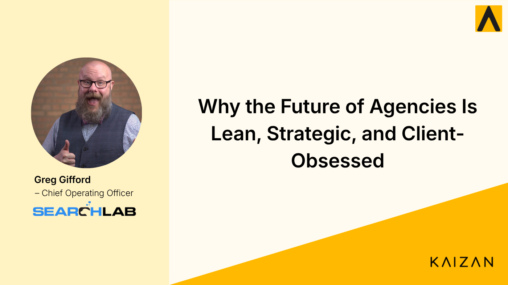

Lean, Mean, and Client-Obsessed: What AI Is Really Changing Inside Agencies

Greg Gifford, COO of Searchlab, on where AI genuinely helps agencies, where it's overhyped, and why understanding the client relationship is the real win.
Ask most agency owners what AI has done for them and you'll get a wall of buzzwords. Ask one who actually runs client relationships day to day, and the answer gets a lot more interesting, and a lot more honest.
We recently sat down with Greg Gifford, Chief Operating Officer of Searchlab, to talk about where AI is genuinely helping, where it's overhyped, and what it means for the future of agency work. The conversation kept circling back to one theme: the agencies that win aren't the ones checking the most boxes. They're the ones who actually understand their clients. Here's what stood out.
Watch the full conversation
Prefer to hear it in Greg's own words? Watch the full interview on YouTube.
Outcomes over activity
"For us, it's more about the outcome than the activity," Gifford told us. It sounds obvious, but it cuts against how a lot of the industry actually operates.
"So many people just say, 'Hey, I need SEO' or 'I need PPC.' And they'll sign up with somebody and just expect that person to start working without asking questions about the business and learning what the goals are."
That's the trap. A client asks for a service, the agency delivers the service, and neither side ever aligns on what success actually looks like. The work gets done. The boxes get checked. And somehow the relationship still erodes.
His alternative is less glamorous but far more durable:
"It's really important for us to align with the clients we work with on what their goals are, and to ensure there's a relationship built there, that we're not just showing up and checking off boxes on a checklist."
For agency leaders, this is the whole ballgame. Execution is table stakes. The relationship, the shared understanding of what you're actually trying to achieve, is what keeps clients from quietly drifting toward the exit.
AI hasn't touched everything (and that's fine)
It would be easy to assume AI has upended every corner of digital marketing. It hasn't, and Gifford was refreshingly blunt about it.
On local search specifically, his verdict was that AI has done "nothing helpful, honestly." The reason:
"AI models just don't understand what local is. AI hasn't affected local search as much as it has affected traditional search."
What has changed is how the platforms are behaving. He's watching Google push AI-style results into local territory: AI map packs appearing in categories like home services and legal, and, in some cases, the familiar call button disappearing from the traditional organic map pack. The effect, in his view, is friction:
"It's harder for people to reach the businesses they want to reach, because a lot of people are just skipping the AI results and then you have to work a little harder to contact that business."
His read on the future is measured rather than breathless. As the models "figure out what local is a little bit more and get better at serving local results without hallucination, it's just going to be easier." That's the posture more agency leaders should take: not every AI headline is a five-alarm fire, and knowing which shifts actually affect your clients is its own competitive advantage.
The real AI win: understanding the client relationship
Here's where the conversation got specific. When we asked where AI has delivered the biggest boost, the answer wasn't content generation or automated reporting. It was client understanding, and it came through Kaizan.
"The biggest boost from AI and client understanding has come from Kaizan. Just having the insight of being attached to all client communication, having those watchwords to look for, either positive things or negative things, having the customer sentiment, having the alerts of, 'Hey, this person hasn't been on a call and you marked that you wanted them on a call once a quarter.' The level of detail we can get around the client relationship is just unbelievable. I would never even have thought this was possible five or six years ago."
To appreciate why that lands so hard, you have to understand what came before it.
Life before: the client health sheet nobody filled out
"It was very difficult before Kaizan," he admitted. Their system was a Google Sheet, a "client health sheet," sitting in the root of every client folder. After every email, phone call, or meeting, the consultant was supposed to update it with the client's level of happiness, scored on a couple of scales.
You can already guess how that went.
"That manual process obviously introduced a lot of error, and you'd have people who would just forget to do it. All of a sudden a client would cancel, and we'd say, 'Why wasn't this on our radar?' You'd go look at the sheet, and they hadn't filled it out in six months."
The backup plan was worse. Managers would record client calls and then "randomly pick a call and watch the recording on double speed to see what was said, to try to figure things out. It was just so inefficient." His most honest line of the whole conversation:
"I almost feel like we just weren't doing it. We were making an effort, but I don't think we were doing a great job of it."
That's the reality inside most agencies. Client health tracking exists on paper. In practice, it depends on busy people remembering to log subjective scores after every interaction, and busy people forget, especially when a client is slowly going cold.
What changed
With Kaizan attached to client communication, the guesswork disappeared.
"Kaizan has opened our eyes to the nuances of the client relationship, because we're able to uncover data points that just weren't available to us before. We have a much more granular view of what's going on with every client relationship we have."
It also changed how the team works together.
"Whenever there's a sales call, everyone wants to see the transcript or the summary of what happened. And with ongoing client communication, it happens all the time, somebody's like, 'Go check Kaizan. Go see what Kaizan says.' It's become this indispensable tool for our team to stay on top of the client relationship."
One clarification he was eager to make: this is not just another AI note-taker.
"There are so many AI note-takers on the market, and people immediately think that's all Kaizan does. I almost don't even care about the note-taker side of it, although it's convenient and nice to have. It goes so far beyond the other note-takers, with all the customer service information and all the data it brings to the table."
His summary?
"This tool is an absolute game-changer. Don't even question it. It's money very well spent. An invaluable customer tool."
Job replacement vs. job enhancement
Zoom out, and Gifford's take on AI and jobs is one every agency leader should sit with.
"When all the AI tools started coming out, so many people thought AI was going to replace all our jobs. To a degree, it might replace some very basic entry-level stuff. But instead of looking at it as a job replacement, it's a job enhancement. It's helping everyone be so much more efficient."
The practical effect is that the "menial execution layer" (repetitive, required, and a genuine time suck) can increasingly be automated.
"That opens up my team, and marketers in general, to spend more time using their brains on the exciting, beneficial, strategic-level work instead of the menial execution."
For smaller shops, the leverage is even greater.
"You've got big agencies with humongous marketing teams. But when you've got a smaller team, your members become so much more effective, because you can automate all these different areas and spend your time on the higher-level strategy."
The future: leaner agencies, and one real worry
Predicting five years out is a fool's errand when the technology moves this fast, and he said as much. But his directional call was clear: agencies will get smaller.
"I don't think we'll need as many bodies, because the execution layer is going to be so much more automated. It becomes more strategic minds. Agencies will be lean and mean: much smaller, but much more efficient and effective than they are today."
The part more leaders should be thinking about is his one genuine concern: the talent pipeline.
"I'm a little worried we lose that entry-level knowledge. If we automate the entry-level stuff and concentrate on the experienced strategy side, then when those people age out, leave, or get promoted, we'll have a smaller pool to escalate into those roles. Five or ten years from now, it might be really hard to break into this, because you can't just come into a strategic role without the experience to understand how things work."
It's a thoughtful counterweight to the efficiency story, and a reminder that "lean and mean" has to be paired with a deliberate plan for building experience, not just cutting headcount.
The takeaway for agency leaders
The pattern here is worth internalizing. AI isn't uniformly transformative. It's barely moved the needle on local search, and it won't replace the strategic thinking that makes an agency worth hiring. Where it's delivering outsized value is in the unglamorous, high-stakes work of understanding your clients: catching sentiment shifts early, surfacing the details that used to live in someone's memory or a half-filled spreadsheet, and making sure a cancellation never blindsides you again.
The agencies that thrive in the next few years will be leaner, more strategic, and relentlessly focused on outcomes over activity. The ones that also solve for client understanding, instead of hoping someone remembers to update the health sheet, will be the ones clients don't want to leave.